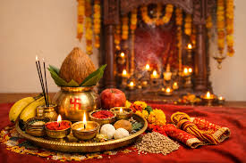
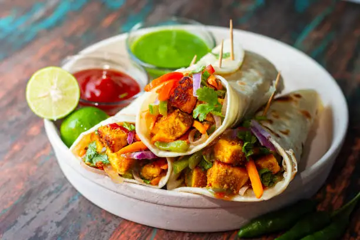

Kedarnath Temple
Uttarakhand · 3,583m altitude
Perched in the Himalayas, this 8th-century Shiva temple is one of the Char Dham pilgrimage sites. Accessible only 6 months a year due to harsh winters.
Five thousand years of civilization — from the banks of the Indus to the halls of modern democracy.
One of the world's earliest urban civilizations, flourishing at Mohenjo-daro and Harappa. Advanced city planning, sanitation systems, and trade networks rivaling ancient Egypt and Mesopotamia.
The sacred Vedas were composed — four foundational texts of Hindu philosophy. Sanskrit became the language of knowledge. Mathematics, astronomy, and philosophy flourished.
Emperor Ashoka unified most of the Indian subcontinent. After the Kalinga War, he embraced Buddhism and spread its teachings across Asia — shaping the soul of a continent.
India's renaissance — advances in mathematics (zero, decimal system), astronomy, medicine, literature, and arts. Aryabhata calculated Earth's rotation. Kalidasa wrote immortal poetry.
A magnificent era of art, architecture, and culture. The Taj Mahal, Red Fort, and countless monuments were built. Emperor Akbar championed religious tolerance and cultural synthesis.
Mahatma Gandhi's non-violent resistance movement inspired the world. August 15, 1947 — India declared independence, becoming the world's largest democracy.
Where stone meets the sacred — India's temples are more than architecture; they are living prayers.
Perched in the Himalayas, this 8th-century Shiva temple is one of the Char Dham pilgrimage sites. Accessible only 6 months a year due to harsh winters.
Dedicated to Lord Vishnu, nestled between Nar and Narayan mountain ranges. One of the 108 Divya Desams — divine centers of Vaishnavism.
Home of Lord Jagannath. The annual Rath Yatra chariot festival draws millions of devotees from across the world.
A Dravidian masterpiece with 14 towering gopurams adorned with thousands of colorful sculptures. Dedicated to Goddess Meenakshi and Lord Sundareshwarar.
The holiest Sikh shrine, shimmering in gold beside the sacred Amrit Sarovar lake. Feeds 100,000 pilgrims daily through the Langar tradition — regardless of religion.
A 5,000-year-old science of body, mind, and soul. Practiced by 300 million people worldwide. The UN declared June 21 as International Day of Yoga — proposed by India.
The cosmic order and ethical duty that sustains the universe. Living in harmony with your truth, community, and nature — the foundational principle of Indian philosophy.
"As you sow, so shall you reap." Every action has consequences that echo through time. Karma encourages conscious, compassionate living — a concept that has influenced global ethics.
Non-violence as a way of life — the principle that inspired Gandhi's independence movement, Martin Luther King Jr., and the global peace movement. India gave the world this profound gift.
From the silk of Varanasi to the drums of Punjab — India dances, sings, and wears its soul on its sleeve.
Nine yards of unstitched fabric transformed into poetry. Each state has its own draping style and weave — Kanjeevaram, Banarasi, Chikankari. Worn by 500 million women daily.
The Sherwani — regal and ornate — is worn at weddings and celebrations. The Kurta is everyday elegance, worn across India in cotton, silk, and every color imaginable.
India's oldest classical dance form from Tamil Nadu. Every gesture (mudra), eye movement, and footstep tells a story from Hindu mythology — a 2,000-year-old living art.
North India's classical dance — a mesmerizing blend of Hindustani music, spinning footwork, and expressive storytelling. Born in the Mughal courts of Lucknow and Jaipur.
The electrifying harvest dance of Punjab — dhol drums, vibrant turbans, and pure joy. Bhangra has traveled from wheat fields to global stages and influenced world music.
Two ancient musical traditions — Hindustani from North India with its deep ragas and sitar, Carnatic from the South with intricate vocal patterns. Both UNESCO intangible heritage.
India celebrates life in colour, light, music and community — every month brings a new reason to rejoice.

The triumph of light over darkness. Millions of oil lamps (diyas) illuminate homes and streets. Families exchange sweets, burst fireworks, and worship Goddess Lakshmi. The sky glows gold for five nights.

The most joyful day of the year! People chase each other with colored powder (gulal) and water guns. It celebrates spring, love, and the defeat of evil. No social barriers — everyone plays together!

Nine nights of dance, music, and devotion to Goddess Durga. The Garba and Dandiya Raas dances of Gujarat fill vast open grounds. Each night has a dedicated color, worn to honor different forms of the divine.

Marking the end of Ramadan, India's 200 million Muslims celebrate with prayers, biryani feasts, sheer khurma, new clothes, and acts of charity. Streets fill with joy and brotherhood.
A billion recipes, a thousand spices — Indian cuisine is a love letter written in flavor.

Tender chicken in a velvety tomato-cream sauce. Born in Delhi in the 1950s, now the most-ordered Indian dish worldwide.

Fragrant basmati rice layered with spiced meat or vegetables. Each city — Lucknow, Hyderabad, Kolkata — has its own signature style.

Fluffy leavened bread from a tandoor oven paired with slow-cooked black lentils in butter and cream. Pure Punjabi comfort.
Fresh cottage cheese cubes in a vibrant spinach sauce. A vegetarian masterpiece loved by millions — spiced with ginger, garlic, and garam masala.

A crispy rice-lentil crepe wrapped around spiced potato filling. Served with coconut chutney and sambar. A breakfast that became a global icon.

Steamed rice cakes dipped in tangy lentil soup with vegetables. Light, healthy, and deeply satisfying — the quintessential South Indian breakfast.

The crown jewel of Hyderabad — slow-cooked with saffron, whole spices, and marinated meat. The dum method seals in every layer of flavour.

Fresh fish simmered in raw mango, coconut milk, and Kodampuli. A recipe perfected over generations on the Malabar Coast.

Hollow crispy spheres filled with tangy tamarind water, spiced chickpeas, and potatoes. The quintessential Indian street experience — each bite a burst of flavour.

A thick vegetable mash on a griddle with mountains of butter, served with soft bread rolls. Born in Mumbai's textile mills for quick worker lunches.

Kolkata's gift to street food — charred flatbread rolled around marinated meats or paneer, onions, and chutney. Fast, flavorful, and iconic.

Hot spirals of fermented batter deep-fried and soaked in saffron syrup. Eaten at breakfast in North India, at festivals everywhere. Pure golden joy.
India speaks in 22 official languages, 780 dialects, and 6 script families — and every voice is India.
India is not just a country — it is a living experiment in pluralism. Over 1.4 billion people from 2,000+ ethnic groups, 6 major religions, and hundreds of traditions live together — sharing the same sky, the same festivals, and the same dream of progress.
"अनेकता में एकता" — Unity in Diversity
From ancient wisdom to frontier technology — India is writing the future with the ink of its past.
India became the 4th nation to land on the Moon and the FIRST to reach the lunar south pole (2023). ISRO launched 104 satellites in a single mission. Mars Orbiter Mission succeeded on the first attempt.
India's UPI payment system processes 10 billion+ transactions per month — the world's largest real-time payment network. Over 900 million internet users. 5G rollout across 700+ cities.
India is the 3rd largest startup ecosystem globally. Companies like Zomato, Paytm, and Ola have redefined entire industries. Bengaluru, Mumbai, and Delhi are global tech hubs.
India aims for 500 GW of renewable energy by 2030. The International Solar Alliance, co-founded by India, unites 120+ countries in the fight against climate change.
India produces 60% of global vaccines and supplied vaccines to 100+ countries through the Vaccine Maitri initiative. Covaxin was India's own indigenous COVID-19 vaccine.
Indians lead Google (Sundar Pichai), Microsoft (Satya Nadella), IBM, and Adobe. India produces 1.5 million engineers per year — the world's largest engineering talent pool.
The guardians of the world's largest democracy — steering 1.4 billion dreams towards a brighter future.
Born on 20 June 1958 in Uparbeda village, Mayurbhanj, Odisha, into a Santhal tribal family, Smt. Droupadi Murmu rose from humble beginnings to become the 15th President of India — the first person from a tribal community and the second woman ever to hold India's highest constitutional office. Her extraordinary journey is a symbol of resilience, determination, and the power of education.
"My election is not just mine — it is the victory of every poor person, every tribal person, every daughter of India." — Smt. Droupadi Murmu

Born on 17 September 1950 in Vadnagar, Gujarat, Shri Narendra Modi is the 14th Prime Minister of India, serving his historic third consecutive term since June 2024 — making him the second-longest serving PM after Jawaharlal Nehru. Rising from humble origins as a tea seller, he transformed Gujarat's economy before ascending to national leadership with a vision of a "Viksit Bharat" (Developed India) by 2047.
"India is not a country — it is a living civilization. And a civilization does not just survive; it inspires." — Shri Narendra Modi
India follows a parliamentary democracy modeled on the Westminster system. The President is the constitutional head; the Prime Minister holds executive power. Together they lead the world's largest democracy.
Two ancient civilizations, a shared steppe and spice road, and a warm friendship built across centuries and continents.
India and Kazakhstan share more than diplomatic ties — they share the spirit of hospitality, respect for nature, love of music and dance, and a deep reverence for their ancestral heritage. Astana's skyline of golden domes echoes Jaipur's amber-hued palaces. The Kazakh dastarkhan table and the Indian langar share the same soul.
To every friend at Astana IT University — Namaste! 🙏
You are not just witnessing a cultural exchange. You are witnessing 5,000 years of a civilization that has always believed: "Vasudhaiva Kutumbakam" — The World is One Family.
Welcome to Incredible India. 🇮🇳


How much do you know about Incredible India? Let's find out!